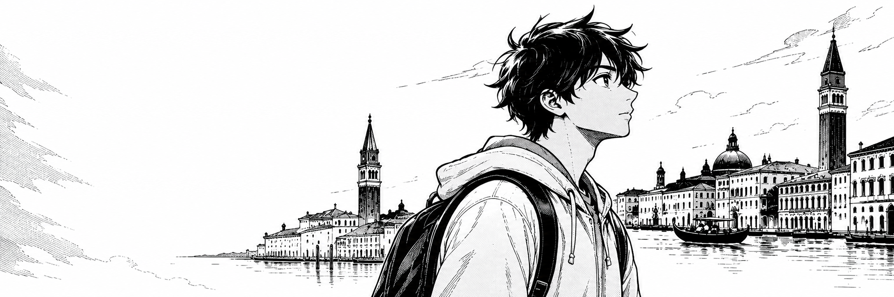
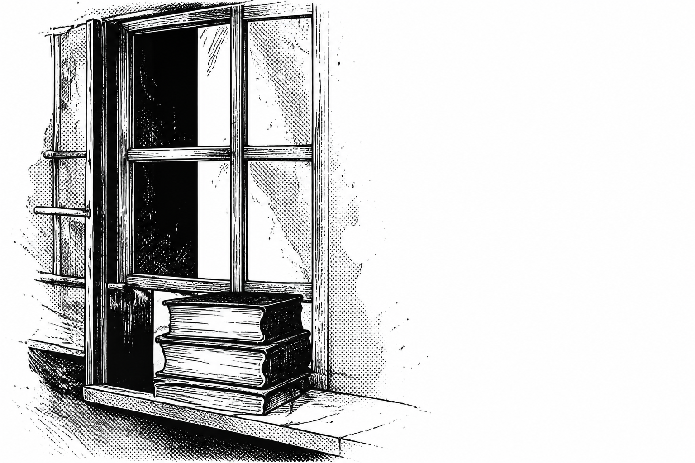
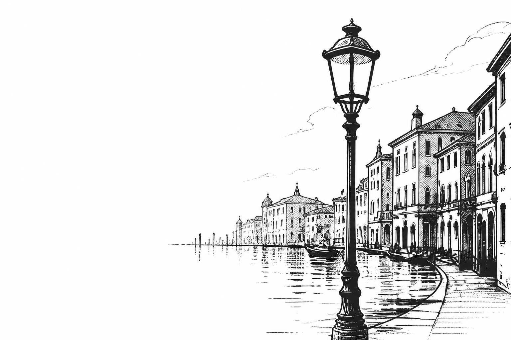

University
- C
- C++
- Computer Architecture

Information Technology Student
Ca’ Foscari University of Venice
Exploring technology, building my foundations,
and discovering where curiosity can take me.
I’m Riccardo Del Giudice, a first-year Information Technology student at Ca’ Foscari University of Venice.
My journey in technology began at Istituto Tecnico Enrico Fermi, where I spent five years studying Information Technology and building my first foundations in programming and databases.
Today, I’m continuing that journey at university, where I’m expanding my understanding of computer science through subjects such as C, C++ and Computer Architecture.
I’m still exploring the many areas of technology and discovering which ones inspire me the most. For me, this stage is about learning, experimenting and building a strong foundation for the future.

Technology is a field with almost endless possibilities, and I’m still discovering which ones are the right fit for me.
What motivates me is the opportunity to keep learning, understand how things work and challenge myself with problems I haven’t faced before.
I don’t have a single destination in mind yet — and I think that’s part of the journey. I’m currently exploring different areas of technology while building a strong foundation in computer science.
I’m not trying to have everything figured out. I’m trying to keep moving forward.

Let’s connect.
Whether you want to talk about technology,
share an idea, or simply
connect, feel free
to reach out.